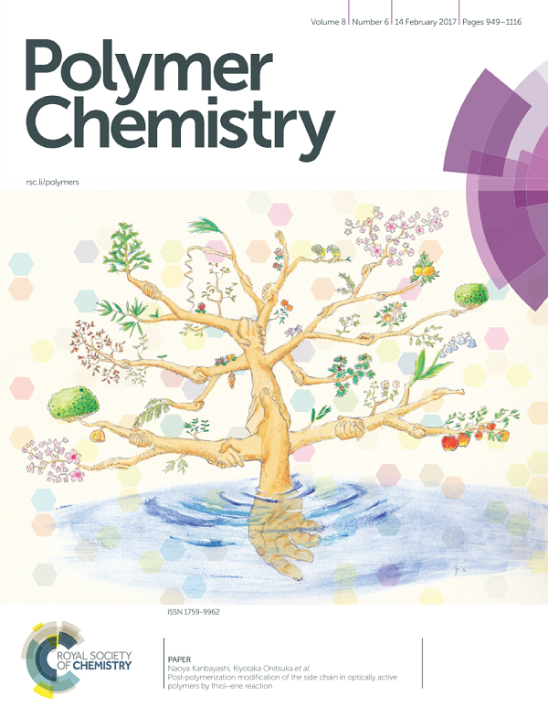

京都工芸繊維大学 応用化学課程 高分子材料デザインコース
高分子合成化学研究室 KAMBAYASHI LAB.
"Post-Polymerization Modification of
the Side Chain in Optically Active Polymer by Thiol-Ene Reaction"
Polym. Chem., 2017, 8, 985-994. DOI:
10.1039/C6PY01946C

Copyright © 2025
Kanbayashi Lab, Kyoto Institute of Technology.